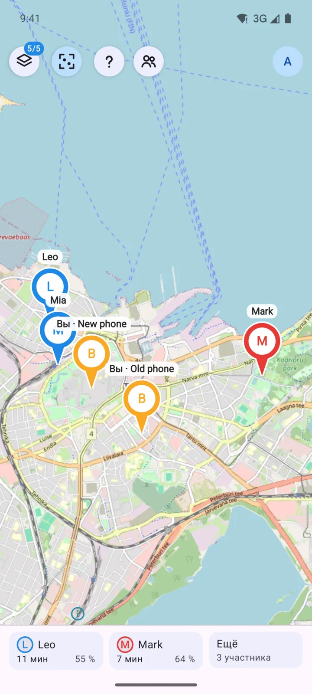
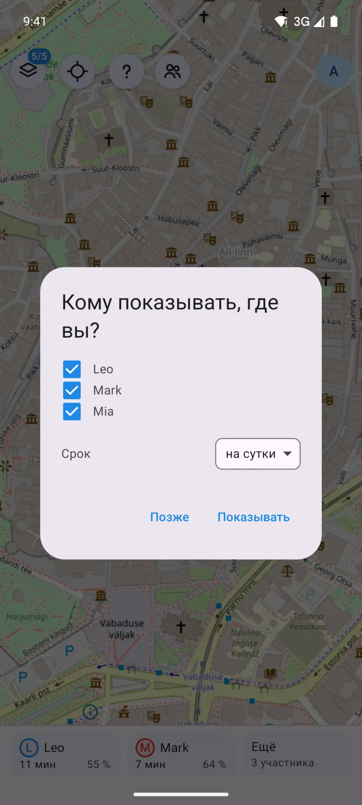
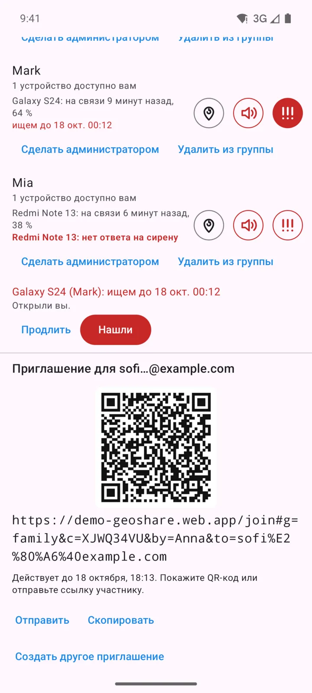
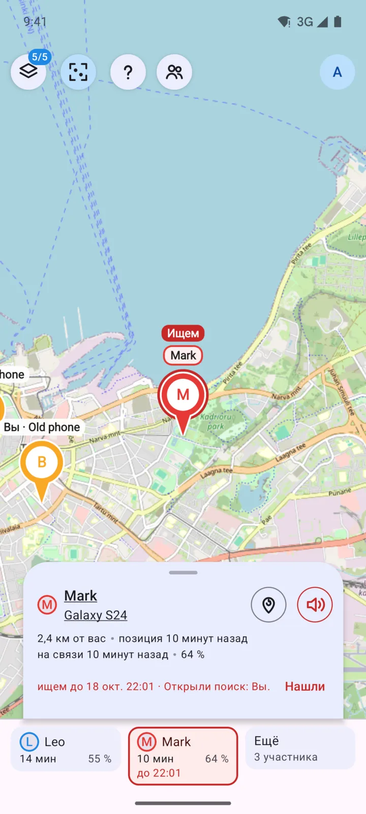
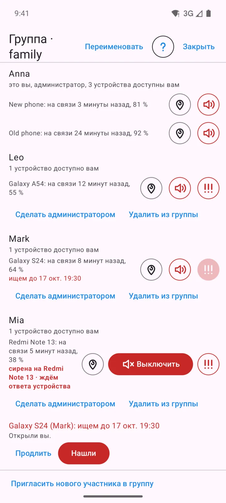
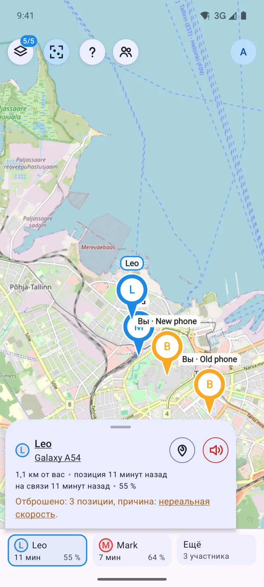
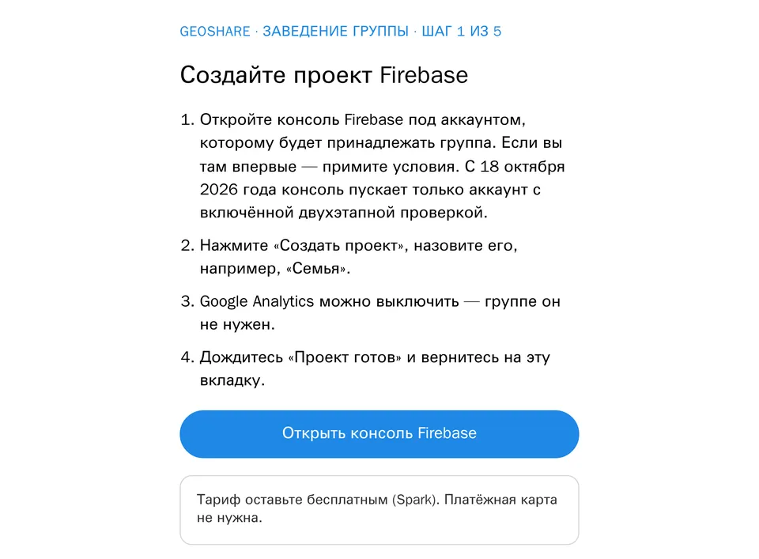
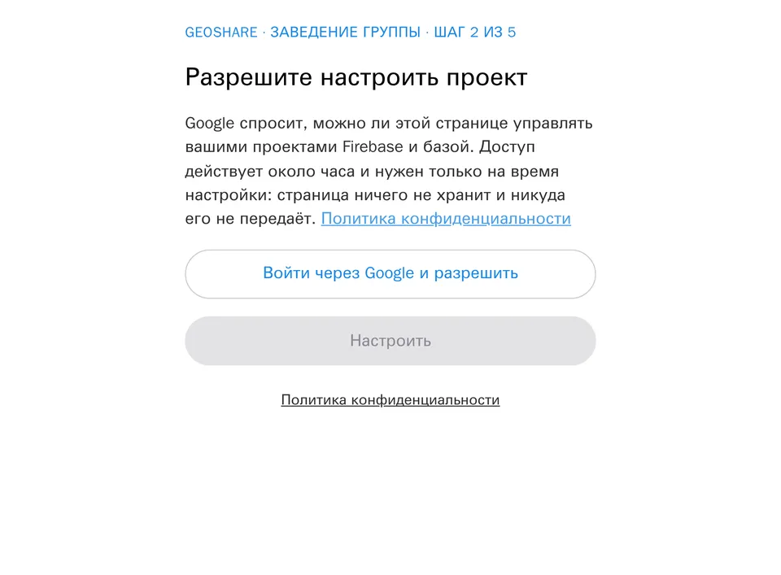
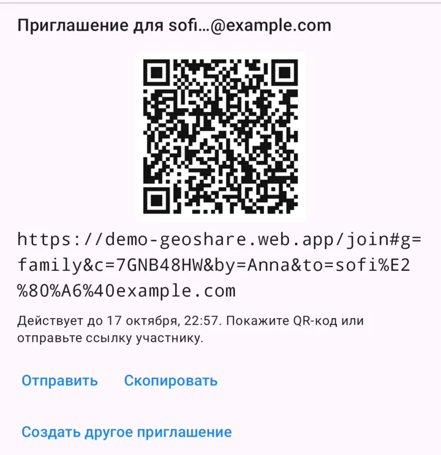

Где ваша семья — в вашем бесплатном Firebase
Android и браузер. Обычные аккаунты Google. Никакого нашего сервера.


Все на одной карте 
Кому показывать и до какого времени — решаете вы 
Вход по QR-коду 
Поиск участника 
Сирена на потерянном устройстве 
Ложные позиции не попадают на карту
Группа в три шага

1Создать бесплатный проект Firebase 
2Открыть страницу настройки 
3Отправить ссылку
Бесплатно — в пределах суточных лимитов Firebase
- 50 000чтений в сутки
- 20 000записей в сутки
- ~5%расходует за сутки семья с двумя устройствами
После превышения база перестаёт отвечать до сброса квоты в полночь по тихоокеанскому времени. Следите за расходом в консоли Firebase.